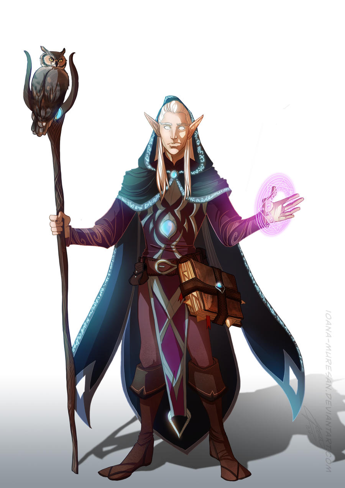

Step 1: Species
Step 1 is picking your character’s species. A species or race is what a person is. Are they a magical elf,
a loud dwarf or are they an unoriginal human. This step sets up what you are and what you look like. Each
species has a list of characteristics to think about when you choose them. Those characteristics are as
follows:
An Ability increase, all species give a small raise to two stats (more on this in step 3).
Age,
all species have different lifespans and mature at different ages.
Alignment, more will be said on alignment
in step 4, but each species tend to learn to certain alignments.
Size, species have different heights and
weights, each species is also considered medium or small in size.
Speed refers to how far a species can walk
in 6 seconds or one turn.
Abilities are also given, which are important benefits that your character will be
able to do when necessary.
Languages are also given; these help you talk with other characters who don’t speak
the common language.
Lineages, some species come from different lineages or sub-species which give a few more abilities.
examples:

Dwarves are a resilient and proud race known for their strong connection to stone and metal. They are typically
short and stocky, standing around 4 to 5 feet tall, but they are as heavy as humans due to their dense build.
Dwarves are renowned for their craftsmanship, especially in forging weapons and armor, and they have a deep sense of tradition and honor.

Elves are an elegant and mystical race known for their grace, longevity, and connection to nature and magic. They are slender and tall,
typically standing between 5 and 6 feet, with pointed ears and an unearthly beauty. Elves are known for their long lifespans, often living
for hundreds of years, which gives them a unique perspective on the world.

Humans are the most versatile and adaptable race. They are often seen as the "jack-of-all-trades" of the fantasy world. While they may
lack the specialized traits of other races, their adaptability and ambition make them a popular choice for players.
Navagation